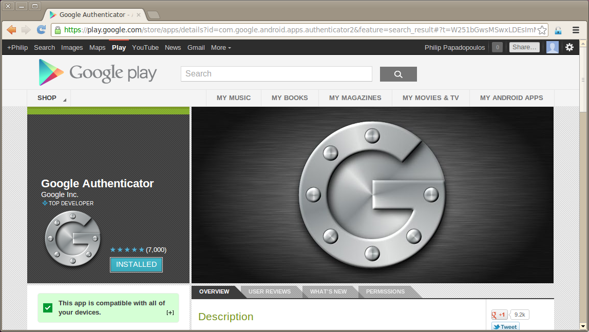
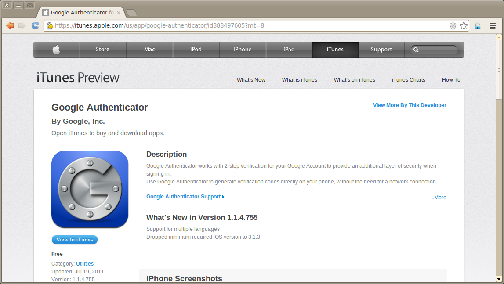
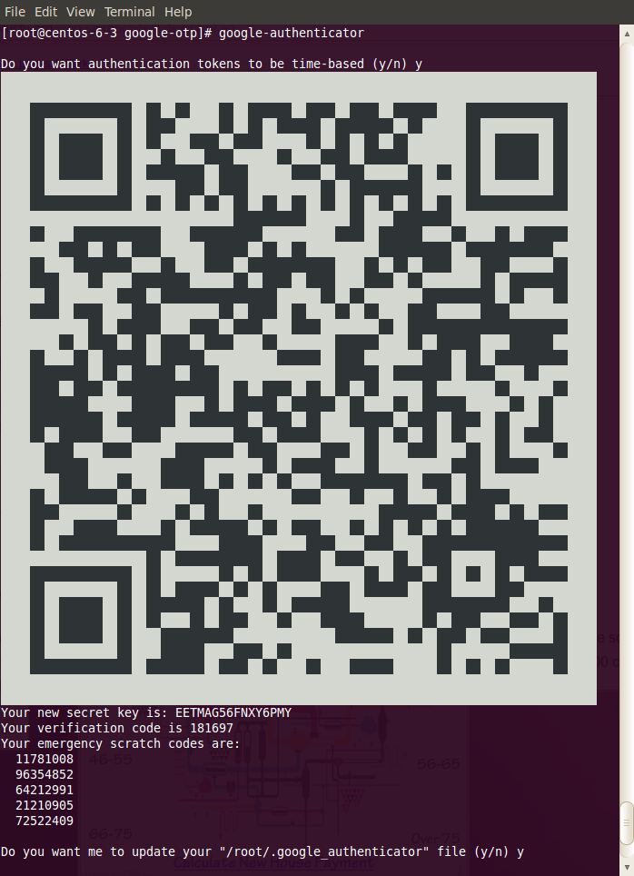
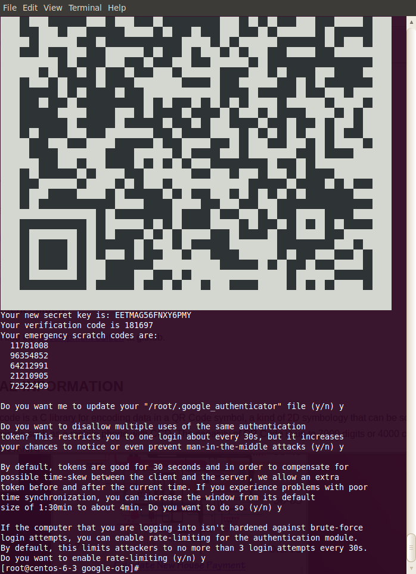
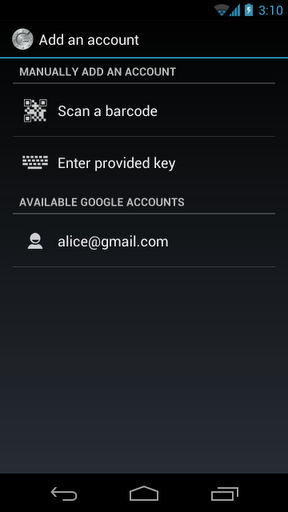

Base Users Guide: 
| ||
|---|---|---|
| Prev | Chapter 8. Advanced Tasks | Next |
Two-factor authentication is a technique to improve password security on frontends and login nodes. The two factors are something you know (password) and something you possess physically (e.g., a phone, a hardware key token , ...). Rocks supports two-factor authentication on Frontend and Login appliances using Google's free and open google authenticator . Two-factor authentication is often called one-time passwords (OTP), because the rotating codes (every 30 seconds, by default) are used just once and then discarded. This document uses two-factor and one-time passwords (OTP) interchangeably.
It is reasonable to ask, "How is this different from RSA or other hardware tokens?". In technique, this method is not different from hardware tokens. Both use time-based keys. However, standalone key tokens are arguably stronger because the device that you possess is not connected to any network (unlike your phone). Nevertheless, Google Authenticator is significantly stronger than just using password-only authentication.
Google authenticator requires the user to download a small application for their smartphone. There are apps for Android phones and Apple iPhones. Please see the appropriate link for your smartphone.
The Android Application is available at the Google Play Store

The IOS Application is available at the Apple iTunes Store

Users must be in the google-otp group to utilize one-time passwords (OTP). The Rocks-defined PAM configuration first checks if the user is in the group, and then checks if a user-specific OTP configuration file is in the correct location (/export/google-authenticator/<username>). This enables cluster owners to have mixtures of users, some of whom use two-factor authentication and some of whom do not. It is highly recommended that users who can gain root privilege (sudo or direct login) utilize two-factor authentication.
The user creates a password file using google-authenticator. A number of options are asked of the user and it is recommended that the user selects "yes" to every question. The program will create a QR code that can be scanned by either the Android or IOS application to register the created password with the phone application.
% google-authenticator |
The following example shows a screenshot of google-authenticator


 | Your terminal font may need to be minimized to fit the QR code onto your display so that it can be scanned by the Phone App |
Scan the QR code with your Phone's Camera while in the Google Authenticator App. For example, in the iPhone app, you should get to screen that looks like

Once a user has created a two-factor code (which is a private password file), it needs to be moved from the user's home directory to a more secure location. That password file, then needs to be owned by root for two-factor to become active. Removing this file, will disable two-factor authentication for a particular user.
# mv /home/<user>/.google-authenticator /export/google-authenticator/<user> # chown root.root /export/google-authenticator/<user> # make -C /var/411 clean groups # rocks sync users |
 | If the user has generated their password on a login node, then securely copy their .google-authenticator file to the /export/google-authenticator directory on the frontend. Rocks 411 will properly sync these files to all login appliances |
If all has been configured correctly, then a user will see an extra step at login, a request for a verification code
[phil@build-x86-64 ~]$ ssh 192.168.122.12 -l phil Verification code: Password: [phil@centos-6-3 ~]$ |
Q: is root's OTP key file synched to Login node
A: No. Like other security keys associated with root on the frontend, this data is never transferred
Q: If I delete an OTP key file from the frontend and then run rocks sync users, will the file be deleted on the Login node?
A: Yes. The 411 handler on the Login node first deletes all keys (except root) in the /export/google-authenticator directory and then unpacks the new ones.
Q: Is it possible to turn off the automatic addition of users to the google-otp group?
A: Yes. This automatic addition is handled by a rocks sync users plugin. If you set the attribute Info_GoogleOTPUsers to "no", then no automated additions will be made. This will not remove users from the google-otp group that have already been added.
# rocks set attr Info_GoogleOTPUsers no |